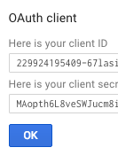

Administration
These preferences are general settings for your system.
Get there: More > Administration > Global System Preferences > Administration
OrderPriceRounding
This system preference allows you to choose between using the precise value or a rounded value when charging fees.
CAS Authentication
The Central Authentication Service (CAS) is a single sign-on protocol for the web. If you don’t know what this is, leave these preferences set to their defaults.
casAuthentication
Default: Don’t use
Asks: ___ CAS for login authentication.
casLogout
Asks: Logout of CAS when logging out of Koha: ___
Default: No
Values:
No
Yes
Description:
CAS single logout means that a user gets logged out not only from the CAS server but also from all visited CAS client applications when logged out in one of them or after reaching a timeout.
Note
The CAS server has to be set up to allow single logout for this to take effect, otherwise the behavior will remain unchanged
casServerUrl
Asks: The CAS Authentication Server can be found at ___
Google OpenID Connect
Visit the Google Developers Console to obtain OAuth 2.0 credentials such as a client ID and client secret that are known to both Google and your application.

Create a project, and give it some details to help you identify it later

Next search for the Google Identity and Access Management API

Enable the Google Identity and Access Management API

Go to ‘Credentials’ and set the OAuth cosent screen values

Next choose to ‘Create credentials’ from the ‘Credentials’ page

Choose ‘Web application’ from the ‘Application type’ menu and fill in the form presented

Set ‘Authorized JavaScript origins’ to your OPACBaseURL
Change the ‘Authorized Redirect URIs’ to http://YOUROPAC/cgi-bin/koha/svc/auth/googleopenidconnect
You will be presented with your values for your client ID and your client secret after saving

GoogleOAuth2ClientID
Asks: Google OAuth2 Client ID: ___
Description:
Enter the client ID provided when setting up the Google API (see Google OpenID Connect above)
You will also need to enter the client secret in GoogleOAuth2ClientSecret and enable GoogleOpenIDConnect to use Google Open ID in the OPAC.
GoogleOAuth2ClientSecret
Asks: Google OAuth2 Client Secret: ___
Description:
Enter the client ID provided when setting up the Google API (see Google OpenID Connect above)
You will also need to enter the client secret in GoogleOAuth2ClientID and enable GoogleOpenIDConnect to use Google Open ID in the OPAC.
GoogleOpenIDConnect
Asks: Use Google OpenID Connect login in the OPAC: ___
Default: No
注解
You will need to select OAuth2 when creating an app in the google cloud console, and set the web origin to your_opac_url and the redirect url to your_opac_url/cgi-bin/koha/svc/auth/googleopenidconnect .
Values:
No
Yes
Description:
This system preference enables the ability to connect to the OPAC using Google OpenID Connect.
Make sure to also configure GoogleOAuth2ClientID and GoogleOAuth2ClientSecret
GoogleOpenIDConnectAutoRegister
Asks: ___ patrons logging in with Google Open ID to automatically register.
Default: Don’t Allow
Values:
Don’t Allow
Allow
Description:
When GoogleOpenIDConnect is enabled, this system preference enables the automatic creation of patrons in Koha when they log in using Google OpenID Connect.
Make sure to fill out GoogleOpenIDConnectDefaultBranch and GoogleOpenIDConnectDefaultCategory to set the default branch and category code for those patrons created automatically.
GoogleOpenIDConnectDefaultBranch
Asks: Use this branchcode when automatically registering a Google OpenID patron: ___
Description:
When GoogleOpenIDConnect and GoogleOpenIDConnectAutoRegister are enabled, this system preference determines the default home branch for those patrons created automatically.
Enter a branchcode. Branchcodes can be found in the libraries section of the administration module.
Make sure to fill out GoogleOpenIDConnectDefaultCategory also.
GoogleOpenIDConnectDefaultCategory
Asks: Use this category code when automatically registering a Google OpenID patron: ___
Description:
When GoogleOpenIDConnect and GoogleOpenIDConnectAutoRegister are enabled, this system preference determines the default patron category for those patrons created automatically.
Enter a category code. Cateogry codes can be found in the patron categories section of the administration module.
Make sure to fill out GoogleOpenIDConnectDefaultBranch also.
GoogleOpenIDConnectDomain
Asks: Restrict Google OpenID Connect to this domain (or subdomain of this domain): ___
注解
Leave blank for all google domains
Description:
This system preference limits the log in of patrons to certain domains.
Interface options
These preference are related to your Koha interface
AddressForFailedOverdueNotices
Default: Blank
Asks: Email address failed overdue notices are sent to: ___ If left empty then it will fallback to the first defined address in the following list: Library ReplyTo, Library Email, ReplytoDefault and KohaAdminEmailAddress.
Description:
This preference controls where the summarized overdue email for patrons without email addresses is sent to.
DebugLevel
Default: lots of
Asks: Show ___ debugging information in the browser when an internal error occurs.
Values:
lots of - will show as much information as possible
no - will only show basic error messages
some - will show only some of the information available
Description:
This preference determines how much information will be sent to the user’s screen when the system encounters an error. The most detail will be sent when the value level is set at 2, some detail will be sent when the value is set at 1, and only a basic error message will display when the value is set at 0. This setting is especially important when a system is new and the administration is interested in working out the bugs (errors or problems) quickly. Having detailed error messages makes quick fixes more likely in problem areas.
DefaultToLoggedInLibraryCircRules
Default: all libraries
Asks: When editing circulation rules show ___ the rules by default.
Values:
all libraries
logged in library’s
Description:
This preference controls the default value in the branch pull down found at the top of the Circulation and fines rules.
DefaultToLoggedInLibraryNoticesSlips
Default: all libraries
Asks: When editing notices and slips show the ___ notices and slips by default.
Values:
all libraries
logged in library’s
Description:
This preference controls the default value in the branch pull down found at the top of the Notices & slips tool.
DefaultToLoggedInLibraryOverdueTriggers
Default: all libraries
Asks: When editing overdue notice/status triggers show the ___ rules by default.
Values:
all libraries
logged in library’s
Description:
This preference controls the default value in the branch pull down found at the top of the Overdue notice/status triggers.
CSVDelimiter
Asks: Default separator for columns in an exported CSV file: ___.
Default: semicolons
Values:
#’s
backslashes
commas
semicolons
slashes
tabs
Description:
This preference determines how reports exported from Koha will separate data. In many cases you will be able to change this option when exporting if you’d like.
KohaAdminEmailAddress
This is the default ‘From’ address for emails unless there is one for the particular branch, and is referred to when an internal error occurs.
Asks: Use ___ as the email address for the administrator of Koha.
Description:
This preference allows one email address to be used in warning messages set to the OPAC. If no email address is set for the branch this address will receive messages from patrons regarding modification requests, purchase suggestions, and questions or information regarding overdue notices. It is recommended that a email address that can be accessed by multiple staff members be used for this purpose so that if one librarian is out the others can address these requests. This email address can be changed when needed.
noItemTypeImages
Asks: Show itemtype icons in the staff interface: ___
Default: Yes
Values:
Yes
No
Description:
This preference allows the system administrator to determine if users will be able to set and see an item type icon in the catalog in the staff interface.
If images of item types are disabled, text labels for item types will still appear in the staff interface.
The OpacNoItemTypeImages system preference is used to show or hide the itemtype images in the OPAC.
ReplytoDefault
Asks: Use ___ as the email address that will be set as the replyto in emails
Description:
By default replies to notice emails will go to the library email address, if you would like to specify a default email address for all replies to notices you can do that here.
ReturnpathDefault
Asks: Use ___ as the email address set as the return path, if you leave this empty the KohaAdminEmailAddress will be used.
Description:
The return path is the email address that bounces will be delivered to. By default bounced notices will go to the library email address, if you would like to specify a default email address for bounces to go to then fill in this preference.
SendAllEmailsTo
Asks: Email to redirect all messages to: ___ (Leave this field empty to send messages to their normal recipient)
Description:
This system preference is used to override any patron email address with this one when sending notices. This is meant to be used in a testing environment to test notices and to avoid spamming patrons.
Important
This is not to be used in a production environment. Otherwise, no patron will receive their intended notices.
virtualshelves
Default: Allow
Asks: ___ staff and patrons to create and view saved lists of books.
Values:
Allow
Don’t Allow
Description:
This preference controls whether the lists functionality will be available in the staff client and OPAC. If this is set to “Don’t allow” then no one will be able to save items to public or private lists.
Login options
These preferences are related to logging into your Koha system
AutoLocation
Default: Don’t require
Asks: ___ staff to log in from a computer in the IP address range specified by their library (if any).
Set IP address range in the library administration area
Get there: More > Administration > Basic Parameters > Libraries
Values:
Don’t require
Require
Description:
This preference protects the system by blocking unauthorized users from accessing the staff client program and settings. Authorized and unauthorized users are determined by their computer’s IP addresses. When the preference is set to ‘Require’, IP authorization is in effect and unauthorized IP addresses will be blocked. This means that staff cannot work from home unless their IP address has been authorized. When set to ‘Don’t require’, anyone with a staff client login will have access no matter which IP address they are using.
IndependentBranches
Asks: Prevent staff (but not superlibrarians) from modifying objects (holds, items, patrons, etc.) belonging to other libraries: ___
Default: No
Values:
No
Yes
Description:
This preference should only be used by library systems which are sharing a single Koha installation among multiple branches but are considered independent organizations, meaning they do not share material or patrons with other branches and do not plan to change that in the future. If set to ‘Yes’ it increases the security between library branches by:
prohibiting staff users from logging into another branch from within the staff interface,
filtering out patrons from patron searches who are not a part of the login branch conducting the search,
limiting the location choices to the login branch when adding or modifying an item record,
preventing users from other branch locations from placing holds or checking out materials from library branches other than their own, and
preventing staff from editing item records which belong to other library branches.
All of these security safeguards can be overridden only by the superlibrarian, the highest level of privileges.
警告
It is important that this value be set before going live and that it NOT be changed while in production.
IndependentBranchesPatronModifications
Default: No
Asks: Prevent staff (but not superlibrarians) from viewing and approving/denying patron modification requests for patrons belonging to other libraries. ___
Values:
No
Yes
SessionRestrictionByIP
Default: Enable
Asks: ___ check for change in remote IP address for session security. Disable only when remote IP address changes frequently.
Values:
Disable
Enable
Description:
When this preference is set to ‘Enable’ Koha will log you out of the staff client if your IP address changes as a security measure. For some systems the IP address changes frequently so you’ll want to set this preference to ‘Disable’ to prevent Koha from logging you out of the staff client every time that happens.
Important
This is meant to help those whose IP address changes several times during the day, setting this preference to ‘Disable’ is not recommended otherwise because it is removing important security features from your staff client.
SessionStorage
Default: in the MySQL database
Asks: Store login session information ___
Values:
as temporary files
in the MySQL database
in the PostgreSQL database
Important
PostgreSQL is not yet supported
Description:
This preference allows administrators to choose what format session data is stored in during web sessions.
timeout
Default: 12000000
Asks: Automatically log out users after ___ seconds of inactivity.
Description:
This preference sets the length of time the Staff Client or OPAC accounts can be left inactive before re-logging in is necessary. The value of this preference is in seconds. At this time, the amount of time before a session times out must be the same for both the Staff Client and the OPAC.
SSL client certificate authentication
AllowPKIAuth
Default: no
Asks: Use ___ field for SSL client certificate authentication
Values:
no
the common name
the email address
System Preferences
UnsubscribeReflectionDelay, PatronAnonymizeDelay & Patron Removal Delay
This is a new feature that allows you to set a certain amount of days after a patron has submitted an unsubscribe request(refused consent), anonymize accounts that are locked/expired and remove anonymized patrons.
SearchEngine
Default: Zebra
Asks: Use following search engine: ___
Values:
Elasticsearch
Zebra